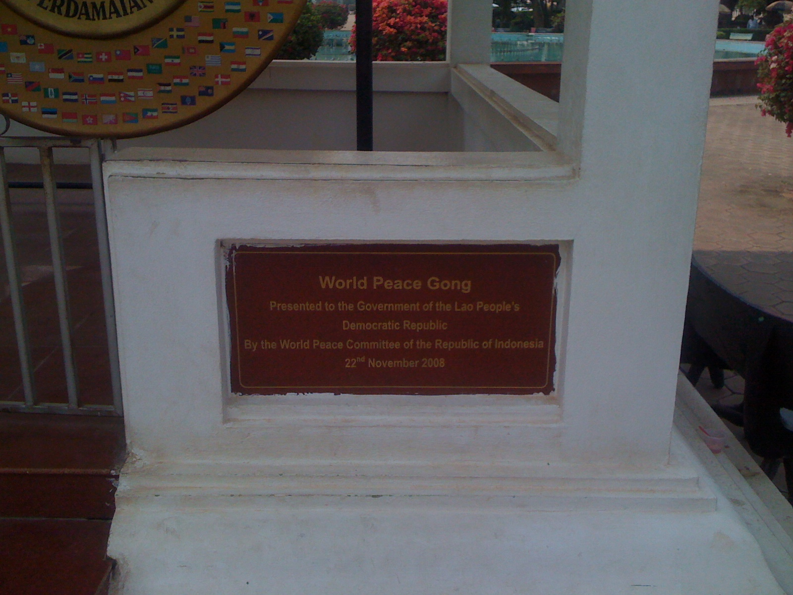

Виза-ран из Бангкока в Лаос

Туристическую визу в Таиланд проще всего получить в одном из соседних государств, прожив перед этим месяц по штампу о прибытии. О том как получить туристическую визу в Таиланд в посольстве Таиланда в Лаосе я расскажу в этой статье.
Вот рабочая схема как гражданину РФ прожить в Таиланде 7 месяцев по туристической визе. Нужно въехать в Таиланд без визы, прожить месяц по штампу по прибытию, получить двукратную туристическую визу в Таиланд в одном из соседних государств, активировать ее вернувшись обратно, прожить по ней два месяца, продлить на месяц в иммиграционном офисе, сделать виза-ран, вернуться, активировав визу повторно, прожить еще два месяца и продлить еще на один.
Стоимость однократной туристической визы в Таиланд 2000 бат, двукратной - 4000. В визе могут отказать и денег не вернуть. Могут вместо двукратной дать однократную и тоже не вернуть денег. Это нормальная практика, например, визу США в свой чистый паспорт я получил только со второго раза. Виза для въезда в Лаос для россиян не нужна, штамп на две недели ставят на границе бесплатно.
Маршрут виза-рана простой. Из Бангкока нужно добраться во Вьентьян, лучше утром, чтобы до 12:00 успеть подать документы на визу, затем заселиться в отель, переночевать, утром получить обратно свой паспорт с визой и в тот же день отправиться обратно в Таиланд. Мы же не достопримечательности приехали смотреть.
Как добраться из Бангкока во Вьентьян
Самолет из Бангкока во Вьентьян. Самый быстрый способ добраться, однако, не оптимальный, на мой взгляд. Я не нашел рейсов дешевле 5000 бат в одну сторону, что слишком дорого для виза-рана. Плюс ко всему самое раннее прибытие в 10:40, что делает трудновыполнимым успеть к полудню, учитывая аэропортовые формальности по прибытию.
Самолет из Бангкока в Удон Тхани. Очень не плохой вариант, промо билеты у Nok Air стоят около 850 бат в один конец, есть рейс с вылетом в 6:00 и прибытием в 7:05. Из Удон Тани во Вьентьян ходят прямые автобусы.
Ночной поезд из Бангкока в Нонг Кхаи. Со станции Hua Lamphong ходят несколько ночных поездов до Нонг Кхаи. Спальное место первого класса стоит около 1200 бат, насколько я помню, а второго - между 700 и 800. Время в пути 12 часов. Второй класс довольно комфортный вагон с кондиционером, мне показался намного удобнее купе РЖД. Из Нонг Кхаи во Вьентьян ходят автобусы, но быстрее доехать на тук-туке до границы, пересечь Мост Дружбы на автобусе за 15 бат, пересечь границу с Лаосом и оттуда на тук-туке или минивэне доехать до Вьентьяна. Билеты можно забронировать онлайн1.
Ночной автобус из Бангкока в Нонг Кхаи. Со станции Mo Chit есть несколько автобусов до Nong Khai, отправляются начиная с 19:00, время в пути 10-11 часов. С автобусной станции в Нонг Кхаи можно взять билет на прямой автобус во Вьентьян, однако их расписание мне неизвестно. Помним, что нам нужно успеть до полудня!
Говорят, с Каосана есть прямые автобусы во Вьентьян, но так как я не доверяю автобусам с Каосана, я про них ничего писать не буду.
Мой опыт виза-рана
Я выбрал поезд. Во-первых еще не путешествовал поездом по Таиланду, во-вторых ночной поезд всяко лучше ночного автобуса в плане комфортности сна. До станции я доехал на BTS+MRT, что очень удобно. Сел в вагон, никакого лежачего места я не увидел. Хмм… Ок, поехали.
Через некоторое время после отправления проводник прошелся по вагону и всем их противопоставленные сидячие скамейки трансформировал в лежачие места и застелил. Спать оказалось действительно удобно. Туалеты примерно как в наших поездах. Кондиционер, в отличие от наших поездов работает нормально.
Поезд опоздал на пару часов. Выйдя из поезда я взял тук-тук за 20 бат до границы, ехать там три шага, думаю, при наличии времени и карты не проблема и дойти. Перешел границу, сел на автобус, проехал до очередной границы, перешел и ее, и оказался в Лаосе. До Вьентьяна 20 километров, народу почему-то вокруг нет, может быть потому что русских в тот рейс не было и все задержались оформлять Лаосскую визу, но я оказался один на один с бандой таксистов, которые хотели взять с меня как можно больше. В итоге я уехал один на минивэне с кондиционером за 300 бат до консульства и потом до гостиницы.
Возле консульства мне, как обычно в таких местах, предложили услуги по оформлению визы. 4000 бат за однократную визу. Я отказался, цену сбросили до 3000. Я отказался опять и пошел получать визу сам. Внутри было людно, автомат, выдающий номерки для очереди не работал, и выстроилось две очереди - одна за номерками, другая - для подачи документов. Кстати, фото и все необходимое для подачи заявления можно сделать прямо в консульстве.
Тайскую визу получали много французов, что меня не удивило, а удивило меня то что у одной англичанки не хотели брать документы. Причину я не понял, но она очень плакала и хотела к тайском мужу. В общем, документы я отдал благополучно и оказался на свободе без паспорта.
Назвав ценовую категорию отеля водителю, я сел и мы поехали. К гостиницам я не требователен, так что первый же номер с завтраком, интернетом, бассейном в небольшой гостинице-бутике меня устроил. В душ и найти чего бы перекусить.
Оказавшись на улицах Вьентьяна, я удивился насколько тут пустынно. Большие магазины электроники совсем безлюдны. На улицах нет не то что торговцев, но и просто людей не видно, а есть только реклама Билайн. Насилу нашел место где можно поесть супа на улице. Еда дороже, чем в Бангкоке, но не в разы. Деньги очень не привычные после тайских бат, которые размером в рубль. Столько нулей даже у нас в девяностые не было, хотя может у кого-то и было, просто мы были бедные. Так как я уже был предупрежден о том, что секс иностранцев с гражданками Лаоса, если те не их жены, уголовно наказуем, причем ответчик - иностранец, то на этом вечер для меня закончился.
Утром завтрак, выселение из гостиницы, поход поглядеть на триумфальную арку Патусай. Там кучка японских туристов, ничего особенного. Видел пионеров, я не успел побывать пионером, а они вот тут в Лаосе есть, молодцы. От арки за документами в посольство, визу дали, можно ехать домой.

На тук-туке на автовокзал, купил там билет до Нонг Кхаи, кажется что-то в районе 30 бат. Находясь на автовокзале я подумал какая бедная страна этот Лаос, Мировой Мирный Гонг возле арки подарил им народ Индонезии, а автобусы - народ Японии. В Нонг Кхаи сразу взял билет на автобус до Бангкока, что стоит 450 бат за билет второго класса в кондиционированном автобусе. На вокзале есть где посидеть, что поесть и попить, а что посмотреть в Нонг Кхаи я совсем не знаю, потому скоротал время на вокзале.
В автобусе мне повезло с попутчиками, большая Лаосская семья, мужчины и несколько женщин разных возрастов стали обо мне заботиться. Замечено, что тайские, лаосские и кхмерские женщины хотят обо мне заботиться и называют милым. Я не помню где они вышли, но точно не доехали до Бангкока. А я доехал, вышел на автовокзале Mo Chit, сел на мотобайк до BTS, а оттуда уже добрался домой без приключений.